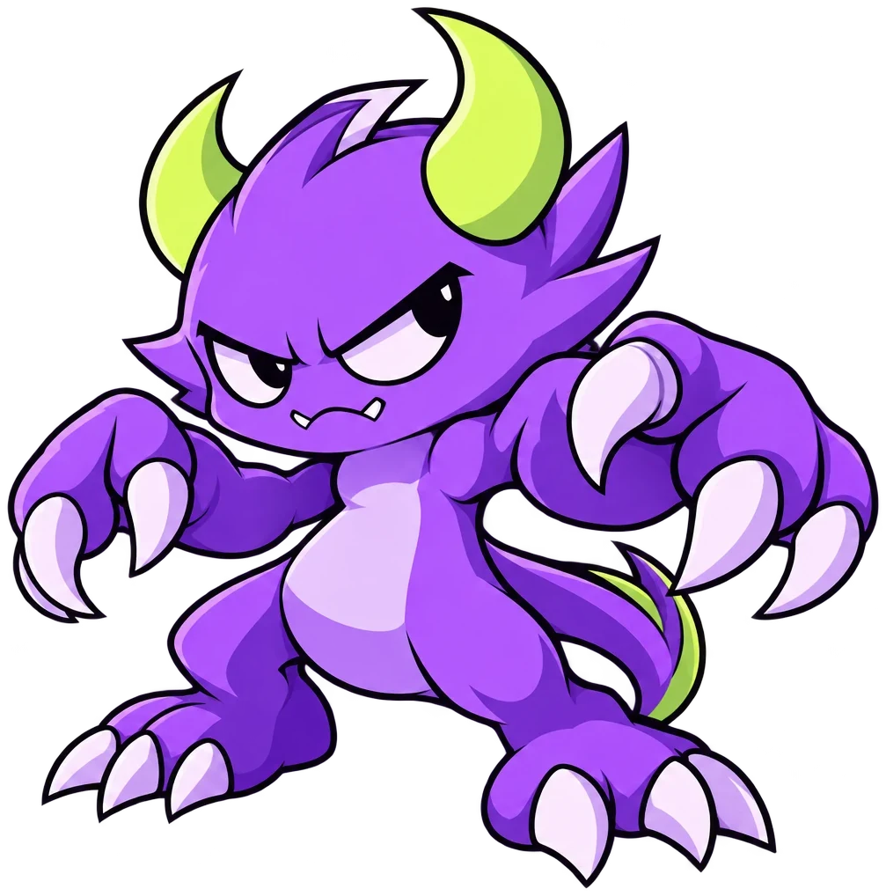

Sapaan yang paling sederhana. Kami suka memulai apa pun dengan tangan terangkat, sebelum ada yang sempat bertanya.
Salam kenal, kami baru menetas.
Menyapa duluan.
Mengecek dua kali.
Helonoia adalah merek baru dengan maskot monster ungu bercakar besar yang selalu melirik curiga. Saat ini kami membuat undangan digital. Yang lain menyusul.

Psst… dia mengawasi kursormu.
Nama kami gabungan dua kata
Di logo, HELO ditulis putih dan NOIA ungu.
Rasa was-was kecil yang bikin kami membaca ulang sebelum menekan tombol kirim.
Ramah dan teliti.
Yang satu membuka pintu. Yang satu lagi memastikan rumahnya rapi sebelum tamu masuk.
Kenalan dengan si monster ungu
Dia belum punya nama. Setiap bagian tubuhnya punya cerita sendiri.
Tanduk hijau lime
Warna paling terang di tubuhnya, sama dengan garis di ekornya. Cukup supaya dia gampang dikenali dari jauh.
Mata yang melirik curiga
Alisnya turun sebelah dan matanya melirik ke samping. Kelihatannya galak, padahal dia sedang menghitung typo di halaman ini.
Cemberut dengan dua taring kecil
Taringnya terlalu kecil untuk menakuti siapa pun. Belum pernah dipakai juga.
Cakar yang terangkat
Kelihatannya siap menerkam. Sebenarnya dia sedang belajar melambai, dan masih latihan.
Ekor bergaris lime
Bergoyang sedikit setiap kali ada yang menyapa balik. Dia pura-pura tidak tahu.
Empat kebiasaan kami
Menyapa duluan
Pintu dibuka dulu, basa-basinya belakangan.
Teliti sampai rewel
Halaman ini sudah kami baca ulang tiga kali. Kalau kamu masih menemukan typo, si monster akan sangat malu.
Janji kecil saja
Kami lebih suka janji kecil yang ditepati daripada janji besar yang meleset.
Sedikit aneh
Monster ungu bertanduk lime jelas bukan pilihan yang aman. Kami memilihnya dengan sengaja.
Yang sudah bisa dilihat
Sudah jalan
Undangan digital
Undangan pernikahan yang dibuka dengan nama setiap tamu, lengkap dengan RSVP, ucapan, galeri, peta, dan amplop digital.
Lihat katalog
Berikutnya
Masih rahasia
Si monster sudah tahu dan memilih diam. Lirikannya mungkin bisa jadi petunjuk.
Yang berikutnya masih disiapkan. Sapaannya sudah duluan.
Kami menyiapkannya pelan-pelan. Sampai saat itu tiba, anggap halaman ini salam kenal.
Mau dikabari waktu sudah siap, atau mau tanya soal undangan? Sapa kami di sini.